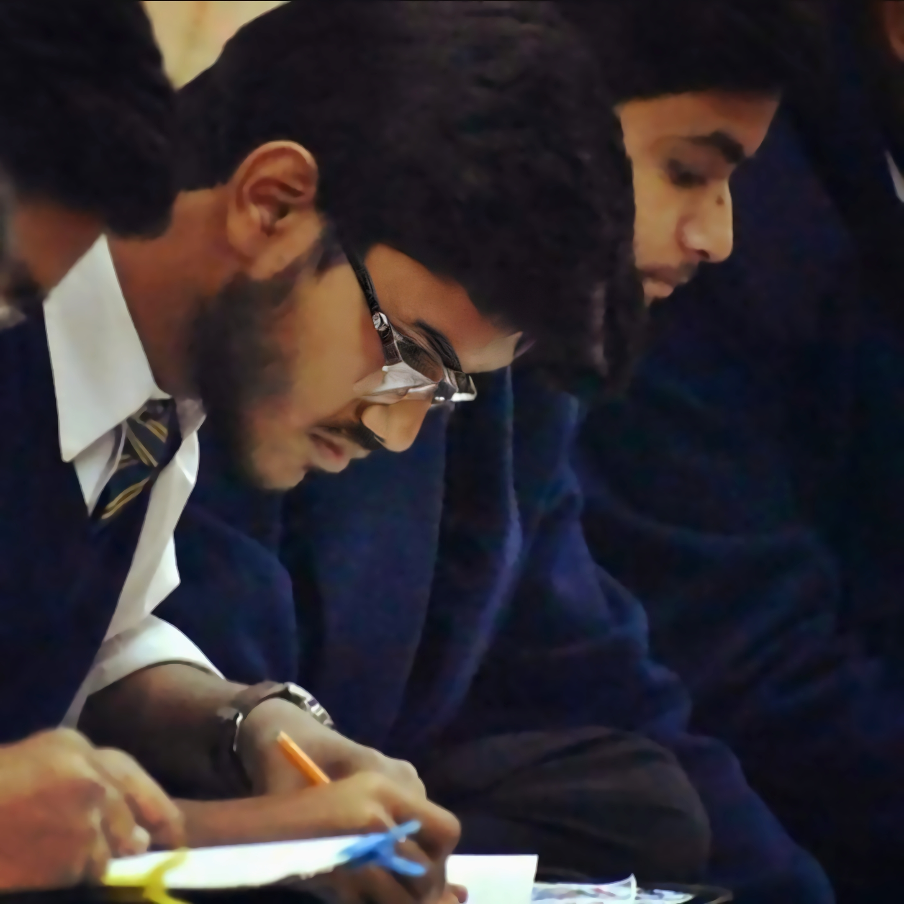

About

Born to a wonderfully creative family, I’m a portrait collage artist living and working in India. I have always loved working with paper and now happily divide my time between creating my own collections, often featuring famous figures, Icons, and working on personal commissions.
Before starting a portrait I extensively research the subject. The first step is to collect photos of the person from childhood and throughout their life, with their family and friends – photos of those special moments that can provide little insights into their personality. Even better is hearing a description of the person. What colours and books and music do they like? What are their true passions?
The paper I use tells this story but also in a thoughtful, playful and often unexpectedly adds layers of stories to the subject’s own. Every single collage has an incredible story behind it. The more you look, the more you see.
A son and daughter once asked me to do a portrait of their father, to mark his 60th birthday. They sent me lots of pictures, then I met the son to talk about his father and his description was so vivid and detailed, I was fascinated.
After hearing such a rich portrayal, I really enjoyed creating this man’s portrait. Because I had seen him through his son’s eyes I felt such admiration for him, even though he and I had never met.
And that’s what I love about my commissioned work. My passion is bringing my clients’ passions to life via paper. It’s an immense privilege to be allowed this glimpse into other people’s lives and then use my creativity to show how unique and special they are.